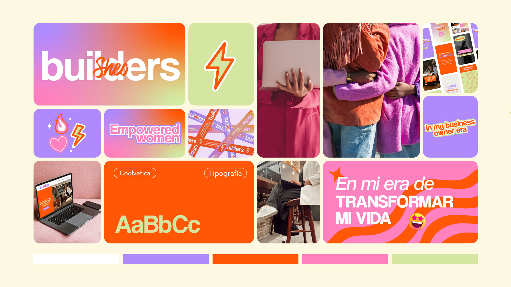
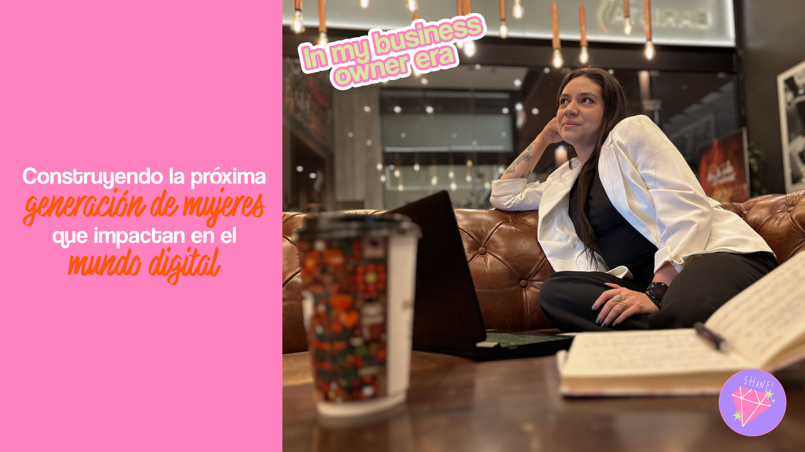
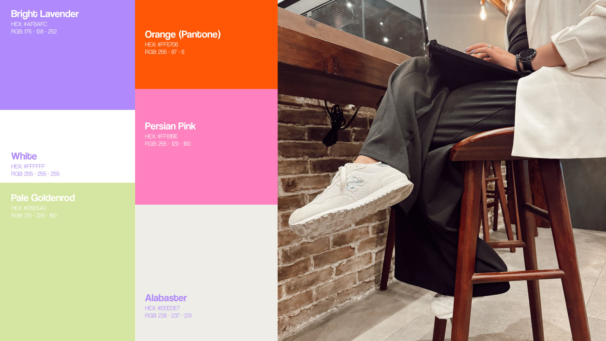
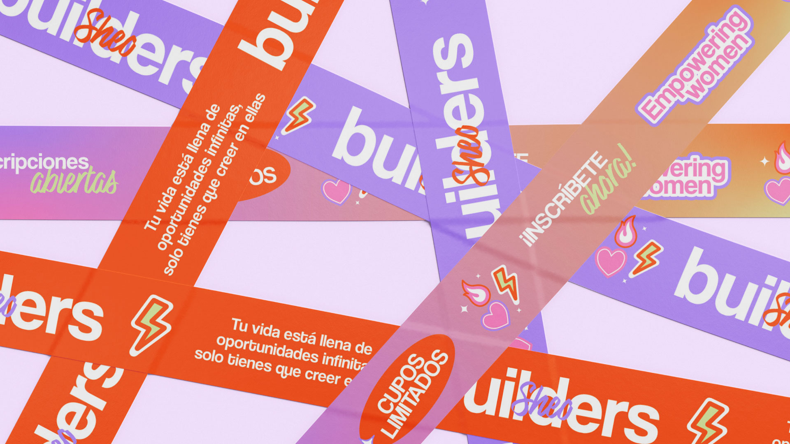
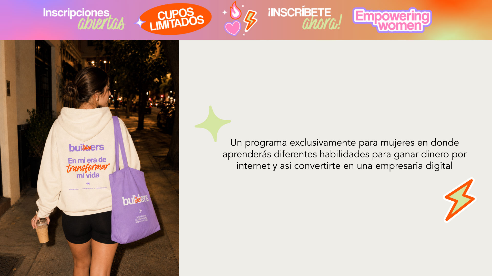
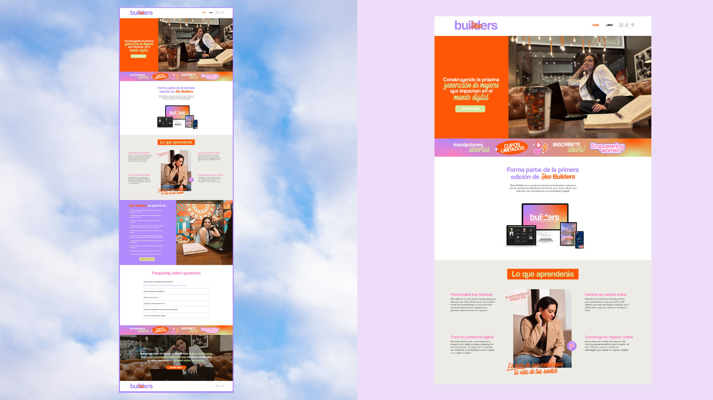
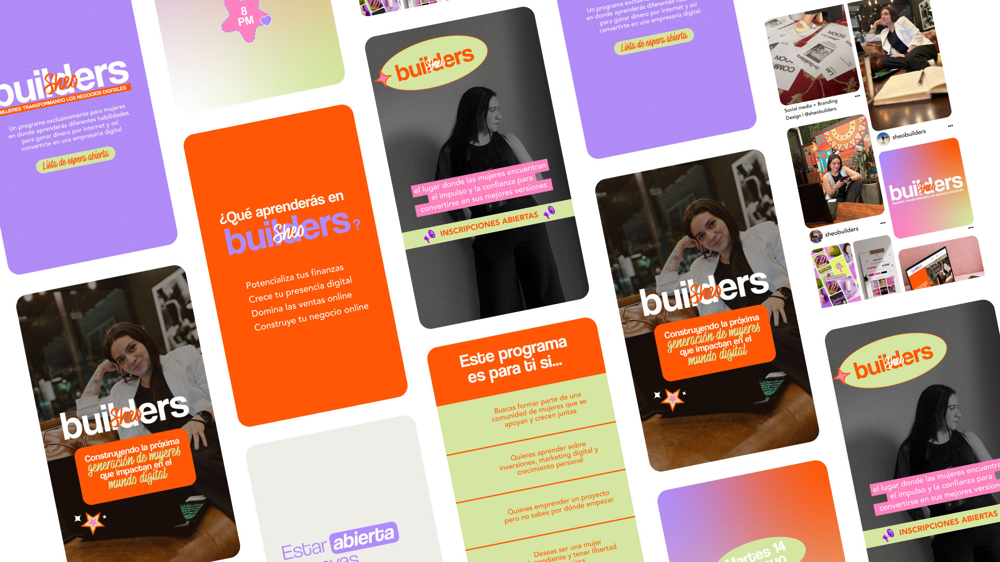

Creating a digital brand around ambition, growth and community.
Brand Strategy · Creative Direction · Content Strategy · Visual Identity · Web Design — 2024
Sheo Builders was an online program created for women who wanted to build greater independence through digital skills, financial education and personal growth. I developed the project from the ground up, from research and brand concept to identity, content and the digital experience.
The idea came from noticing a gap in the communities I was seeing online. I wanted to create a space where women could learn practical skills while also working toward greater independence, personal growth and the life they wanted to build.
I began by defining the women the program was meant to serve, focusing on their ambitions, frustrations and desire for greater control over their time, income and future. Those insights shaped a brand designed to feel energetic and aspirational, but also supportive and community-driven.
"Sheo" combines the idea of women and leadership, while "Builders" represents the process of building a life around purpose, growth and financial freedom.
A vibrant community of women building their skills, independence and the life they want to create.






